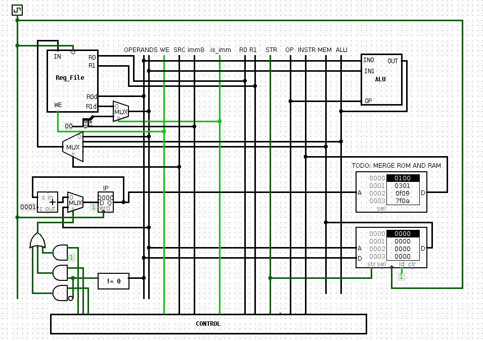
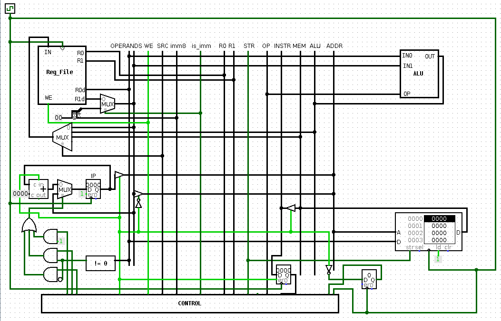
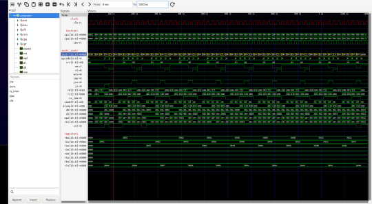
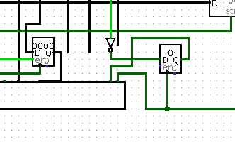
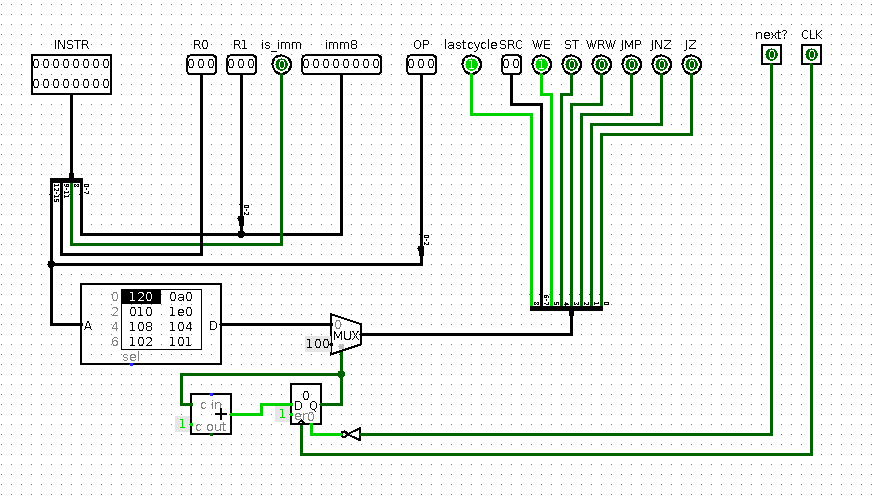

main
go back
16b2x CPU
date: 2022-05 ; 2023-01 ; 2023-04
desc: second CPU design, mostly fixes from previous designs ; implemented unified memory ; first CPU written in VHDL
proj: not available, maybe will be, not sure
OVERVIEW

full image
as with previous design, this CPU was initially done in logisim
this time there were no major flaws in the ISA, general layout was somewhat inspired by SAP from Digital Computer Electronics (same thing that Ben Eater used for 8 bit computer)
pretty much everything that had to be fixed from previous design, was fixed
as note near ROM/RAM (and as some features of ISA which is described below) suggests, project was not fully complete then (or ever)

full image
added circuitry allowed for instructions to execute for 2 cycles which is essential for unified data and instruction memory
most instructions execute in 1 cycle as in previous iteration, loads and stores take 2 cycles
during 1st they access data, during 2nd they access next instruction

full size image
first major-ish project in VHDL so code is not as good as it should be, entire project is in single file, including tests
implementation does not have multicycle instructions for simplicity, same as first iteration of entire project
ISA
Instructions:
- mov Rd, Rs/imm8 # Rd <-- Rs/imm8
- ldw Rd, Rs/imm8 # Rd <-- M[Rs/imm8]
- stw Rd, Rs/imm8 # M[Rs/imm8] <-- Rd
- rdw Rd, Rs/imm8 # Rd <-- P[Rs/imm8]
- wrw Rd, Rs/imm8 # P[Rs/imm8] <-- Rd
- jmp Rs/imm8 # IP <-- Rs/imm8
- jnz Rd, Rs/imm8 # if(Rd != 0) IP <-- Rs/imm8
- jz Rd, Rs/imm8 # if(Rd == 0) IP <-- Rs/imm8
- add Rd, Rs/imm8 # Rd <-- Rd + Rs/imm8
- sub Rd, Rs/imm8 # Rd <-- Rd + Rs/imm8
- not Rd, Rs/imm8 # Rd <-- ~ Rs/imm8
- and Rd, Rs/imm8 # Rd <-- Rd & Rs/imm8
- or Rd, Rs/imm8 # Rd <-- Rd | Rs/imm8
- xor Rd, Rs/imm8 # Rd <-- Rd ^ Rs/imm8
- sll Rd, Rs/imm4 # Rd <-- Rd << Rs/imm4
- slr Rd, Rs/imm4 # Rd <-- Rd >> Rs/imm4
M[x] refers to accessing memory at address x
P[x] refers to accessing IO port with id x (not implemented in any iteration)
Instruction Format:
AAAABBBC XXXXXXXX
AAAA - opcode
BBB - Rd id
C - if 1 then second operand is immediate, otherwise it is register
X3 - Rs
X4 - imm4
X8 - imm8
Xn means last n bits of X
Example Program:
mov R0, 0
mov R1, 1
#computes nth fib number
mov R7, 9
jz R7, end
loop:
stw R0, 0
mov R2, R0
mov R0, R1
add R1, R2
sub R7, 1
jnz R7, loop
end:
mov R0, R0 #nop for assembler to place label correctly
UNIFIED MEMORY
the main goal of this project was to unify memory
unfortunately I dont remember attemps too well but the entire approach was very convoluted and ultimately could not work
idea (as much as I remember) was to check whether data is already out and if so switch address
this cannot work because there is nothing that stores 1st result so a register has to be added
but a register cannot just store data whenever and has to wait for clock so the only solution is to have multicycle operation
note 1: there is another slight problem with checking availability of data - logisim RAM outputs data almost immediattely and does not signal whether it is ready
note 2: even with latch (which does not update on edge) something like clock has to be used to decide when to update that latch
note 3: updating on half cycle works too but that behaves identically (from digital logic POV) as twice as fast clock
after taking long break and accepting multicycle operation, unified memory worked pretty much instantly
CPU was not designed with more than 1 cpi and it was kind of hacked in
each instruction has "last cycle" in control signals and if it is set then instruction is fetched to Instruction Register, this is usually the case
if it is NOT set then IR is not updated and '1' is written to additional 1b register which allows current instruction cycle to be updated to 1
the middle-man register is completely not needed, next design fixed this problem
solution is to NOT use ASYNC reset of register that holds current cycle of instruction, as was done, for some reason

full image

full image
VHDL
VHDL here was mostly like processor design of the 16b1x, giant pile of mess, not knowing what I am doing and trying to make things work
921 lines of entities with their testbenches and CPU
most of which is VHDL boilerplate (that part did not change in later projects) and actual logic is simple, CPU body (connections between components and logic) has only 60 LOC
most of which are whitespace or VHDL keywords
other than that, it is almost 1:1 translation of first iteration
THE GOOD
No disasters and fixed previous mistakes!
instructions were allocated properly and format is pleasant to write assembler for (this time it was written almost immediattely, as it should)
overall layout is also much nicer to look at however individual components are mostly identical as in 16b1x
THE BAD
no stupidly bad decisions and mistakes like last time, all are minor enough to land in THE UGLY
THE UGLY
Did not use ports even though there are somewhat specified in the ISA
ISA coulds still be copy-pasted here and site would still be readable
this is because CPU is so simple there is nothing to document, later ones radically improve on complexity (and being interesting) side
NOP slide is still present and there is no halt instruction so CPU always executes
main
go back